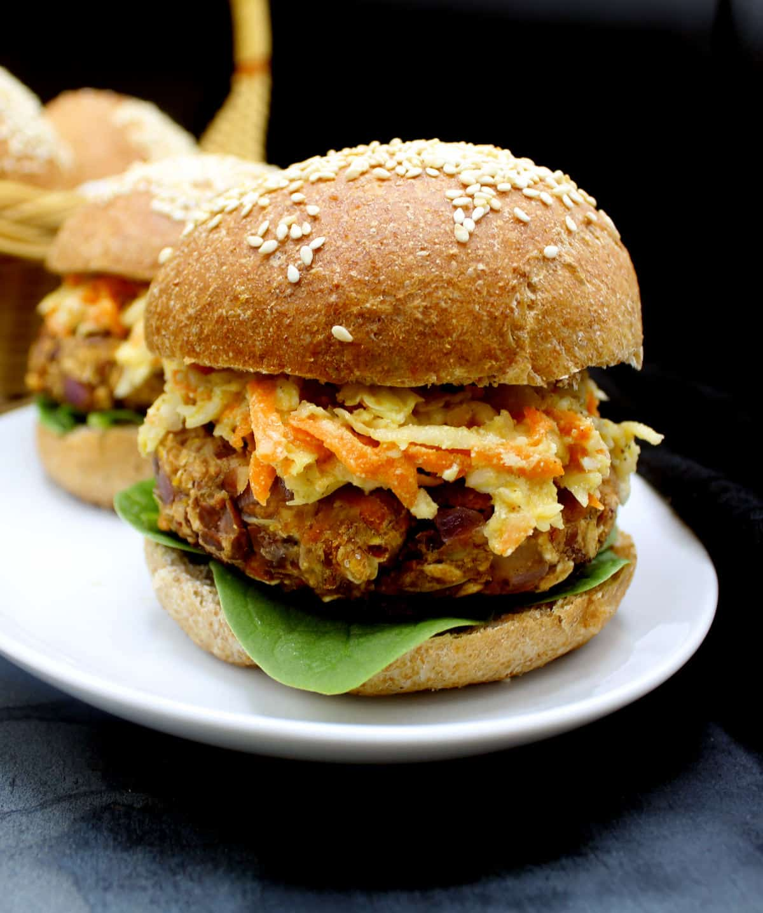

Vegan Bean and Oats Burger

A scrumptious, grill-worthy and nourishing vegan Bean and Oats Burger
that is packed with all the goodness you can imagine from oats,
two kinds of beans, and carrots. There are no added oils in
this veggie burger patty and it's hefty and sturdy enough
for your Memorial Day grill. Also a gluten-free, soy-free and nut-free recipe.
Ingredients
- Onion
- Garlic
- Quick-Cooking Oats (or rolled oats, run through a food processor to break them down a bit, are fine)
- Pinto beans
- Red beans
- Carrots
- Ground cumin
- Cayenne
- Tomato ketchup
- Dijon mustard of whole-grain mustard
- Tamari (optional if soy-free)
- Salt, as needed
- Cooking spray for coating the pan or grill
Instructions
- Heat a skillet and saute the onion and garlic with a tiny bit of salt
(no oil) for a few minutes until translucent but not brown.
- Add the carrots, cayenne, and cumin and cook a couple minutes
or until carrot is tender. Turn off the heat and set aside.
- Mash the beans in a large bowl. Add the carrot mixture, mustard,
ketchup, tamari and oats.
- Mix well, then shape the mixture into eight patties.
You can make more, smaller patties, or fewer, larger ones.
For the grill shape the patties thicker.
- Heat a nonstick or cast-iron skillet and coat with cooking spray.
Cook patties over medium heat for four to five minutes on each side,
or until golden brown. I like mine a little charred for extra
flavor or you can char them on the grill.